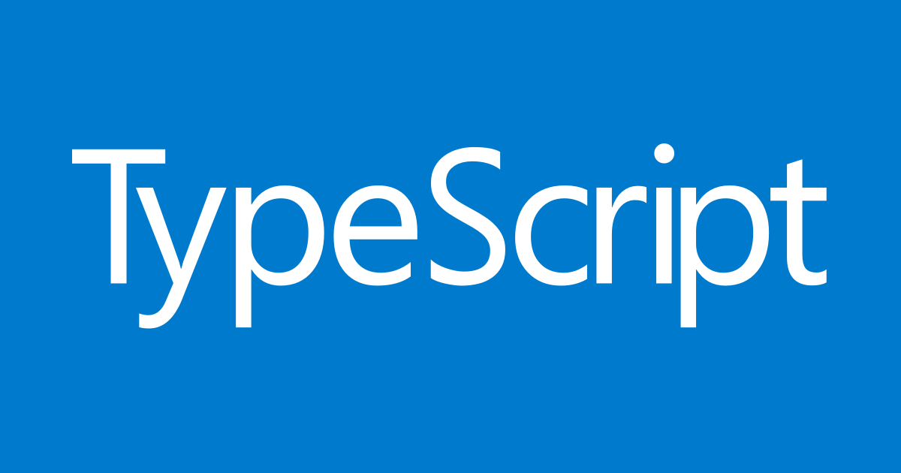

Tegebu TS勉強会で登壇しました
Typescriptのセキュアなランタイム、Denoについて話をしました

Publication date： 2020-06-23
10 Things I Regret About Node.js§
JSConf EU 2018で、Node.js作者であるRyan Dahl ※ライアン・ダールが発表した内容。
日本語にすると、「Node.jsについて後悔する10のこと」。
Denoの公表を含んでいました。
※ regretの直訳は色々ある
- 後悔
- 反省点
- 設計ミス
続きは§
後日全てを公開します。
（tsxで埋め込みする予定）